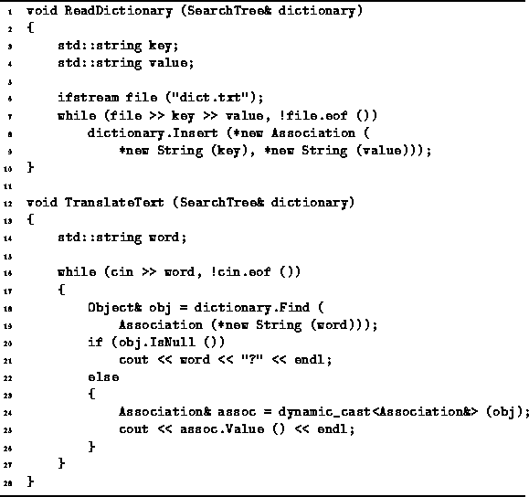

Data Structures and Algorithms
with Object-Oriented Design Patterns in C++
Data Structures and Algorithms
with Object-Oriented Design Patterns in C++There are many applications for search trees. The principal characteristic of such applications is that a database of keyed information needs to be frequently accessed and the access pattern is either unknown or known to be random. E.g., dictionaries are often implemented using search trees. A dictionary is essentially a container that contains ordered key/value pairs. The keys are words is a source language and, depending on the application, the values may be the definitions of the words or the translation of the word in a target language.
This section presents a simple application of search trees. Suppose we are required to translate the words in an input file one-by-one from some source language to another target language. In this example, the translation is done one word at a time. I.e., no natural language syntactic or semantic processing is done.
In order to implement the translator we assume that there exists a text file, say "dict.txt" which contains pairs of words. The first element of the pair is a word in the source language and the second element is a word in the target language. To translate a text, we first read the words and the associated translations and build a search tree. The translation is created one word at a time by looking up each word in the text.
Program  gives an implementation of the translator.
Two functions are given, ReadDictionary and TranslateText.
The first function takes a reference to a SearchTree instance
which is used to hold the pairs of words.
Notice, this implementation works with all the search tree types
described in this chapter
(e.g., BST, AVLTree, MWayTree, and BTree).
gives an implementation of the translator.
Two functions are given, ReadDictionary and TranslateText.
The first function takes a reference to a SearchTree instance
which is used to hold the pairs of words.
Notice, this implementation works with all the search tree types
described in this chapter
(e.g., BST, AVLTree, MWayTree, and BTree).

Program: Application of Search Trees--Word Translation
The ReadDictionary reads pairs of strings
from the file "dict.txt" (lines 6-7).
The Association class defined in Section
is used to contain the key/value pairs.
A new instance is created for each key/value pair
which is then inserted into the search tree (lines 8-9).
The process of building the search tree terminates
when the end-of-file is encountered.
The TranslateText function takes as its lone argument a reference to a search tree which is assumed to contain the set of key/value pairs read in by the ReadDictionary function. The TranslateText function reads words one at a time from the standard input, cin, and writes the translation of each word on the standard output, cout. Each word is looked up as it is read (lines 18-19). If no key matches the given word, the word is printed followed by a question mark (lines 20-21). Otherwise, the value associated with the matching key is printed (lines 24-26).
 Copyright © 1997 by Bruno R. Preiss, P.Eng. All rights reserved.
Copyright © 1997 by Bruno R. Preiss, P.Eng. All rights reserved.